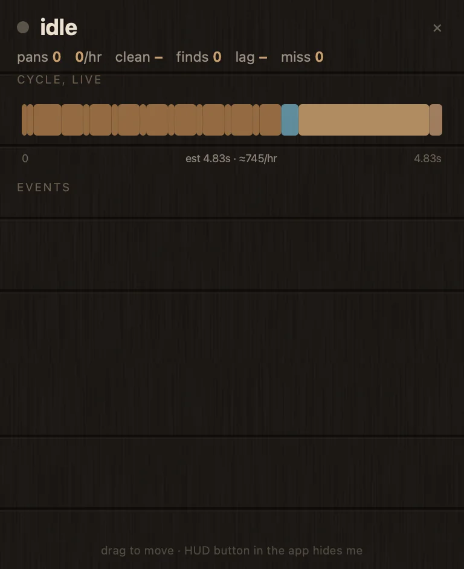
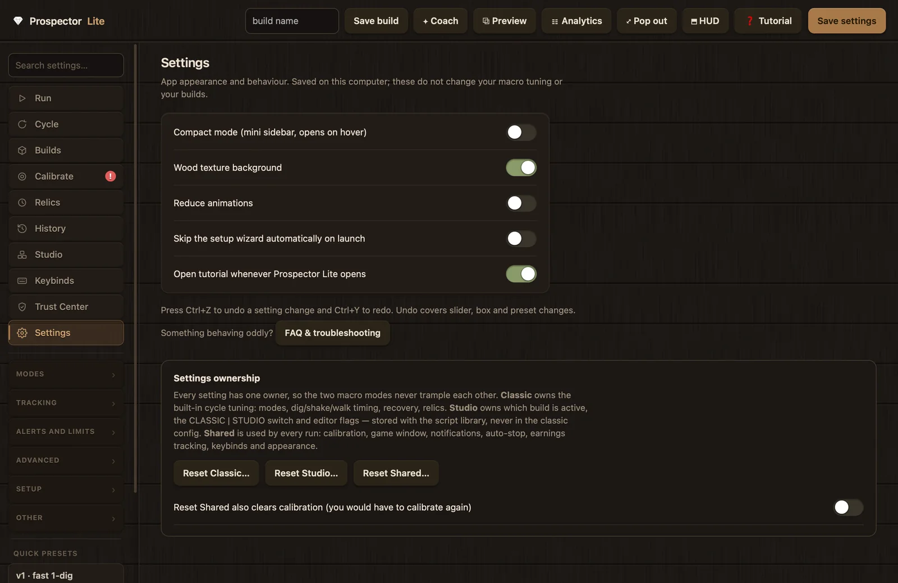

Reference
Troubleshooting and FAQ
When something misbehaves, the app usually names the cause itself: badges, banners, and the warning drawer point at the setting or calibration involved. This page collects the common symptoms, their likely causes, and the fixes, grouped by problem area. The FAQ at the bottom answers the questions that come up before and after installation.
First checks
Four in-app surfaces resolve most problems before you need this page. Work through them in order; each one is faster than reading a matrix of symptoms.
- Open the warning drawer. A red badge on a sidebar tab means an error, a yellow badge means a warning; clicking the badge opens the drawer at that tab's top issue without switching tabs. Each entry shows What happened, the numeric evidence with its thresholds (for example "nudges: 9 in 12 cycles (0.75/cycle, threshold 0.6)"), the most likely cause with a confidence label (High confidence, Medium confidence, or Possible cause), and the settings to review with Open setting, Apply suggested value, and Undo buttons.
- Search the built-in FAQ. The FAQ & troubleshooting browser is reachable from the Help menu, the warning drawer, the Calibrate tab, Settings, the wizard's Readiness Check, and the Trust Center. It holds 20 entries, works fully offline, is searchable across questions and symptoms, and each entry ends with buttons that open the relevant setting, calibration step, or permission card.
- Run the test tools. The Trust Center has a live test for each permission. The Calibrate tab has Test detection (live), Test capacity calibration, Test money/shards read, and Test find pop-up read; the guided cue page has a per-prompt match check under Test existing calibration. Each test reports what it read, so you can tell a detection problem from a calibration problem in seconds.
- Check the logs. Export diagnostics (on the wizard's Readiness page or in the Trust Center) produces a secret-free JSON summary.
run_history.jsonkeeps the last 100 runs with stats, event counts, and stop reasons;run_logs/holds the full per-run engine log;onboarding.logrecords wizard and diagnostics actions (it rotates at 256 KB and contains no secrets).

Detection problems
Prompt detection runs on Advanced Cue Matching: a size-exact letter-shape mask captured from your own screen for each of the "Pan", "Collect Deposit", and "Shake" prompts. At runtime a prompt counts as visible only when at least 85% of its mask's letter pixels read white. Masks stand down when the Roblox window size drifts more than 2 px from the size they were captured at; the single-pixel checks then act as a fallback, which needs at least 12% white pixels in a small box around the calibrated spot. Most detection failures trace back to one of those two rules.
| Symptom | Likely cause | Fix |
|---|---|---|
| A prompt is visibly on screen but the macro does not react (no_progress events in the log) | Masks or pixels are stale: the window moved or resized since capture, or a capture was taken on the wrong prompt or included the mouse cursor | Run the cue check on the Calibrate tab, then re-capture the affected prompt at your playing size. After a size change, expect masks to have disabled themselves; that is the 2 px guard working, not a fault. |
| Prompts stopped being detected right after a window resize; cue_masks shows stale or needs review | Masks are size-exact bitmaps and disable themselves past 2 px of window-size drift | Re-capture the three prompts at the new size. The drift disable is deliberate; re-capture rather than fighting it. See the cue matching guide. |
| The cue check reports "no match right now" with a low percentage | The prompt was not on screen during the test, or the mask is stale | A prompt only matches while it is on screen, so test each cue in its real situation: standing in water for "Pan", on land at a deposit for "Collect Deposit", mid-shake for "Shake". The check reports the live percentage against the 85% requirement. |
| The cue check warns that the background is mostly white too | The capture area sits over a bright background, which makes white-fraction reads unreliable | Angle the camera so the prompt sits over darker ground and re-capture. In the mask editor, click the white mouse cursor to exclude it; green pixels are the ones kept. |
| Capture reports no white cue text where you clicked | The click landed off the word, or the white threshold is too strict for your display | Click directly on the cue word. If letters still are not picked up, lower "White sensitivity (lower = more permissive)" on the Calibrate tab (default 160, range 80 to 240) and capture again. |
| The macro reacts when no prompt is on screen | A mask is missing or disabled, so the single-pixel fallback is active, and a white object near the calibrated spot trips it | Capture the missing mask. A mask matches the letter shape itself, so a player or texture that happens to be white cannot reproduce it. |
| Nothing is detected at all, or captures come back black (macOS) | Screen Recording is not granted, or was granted after this copy of the app started | See permission problems below; grants apply on the next launch. |
| The app cannot find the Roblox window; runs stall immediately | Roblox is on a secondary display, minimized, or not running | Put Roblox on the primary display (the one with the menu bar on macOS), restore it, and press Detect Roblox window on the Calibrate tab. Detection reads the live window list each time and never gives up permanently; success prints the size and position, for example "Found: 1800x1087 at (0, 39)". |
| Detection stopped working after a game update | Pixel positions move when the game UI changes | Re-run the Calibrate tab. Calibration is the fix for almost all detection regressions. |

Timing problems
Timing faults show up as counters, not crashes. Watch nudges, shake misses, and recoveries on the Run tab (the Analytics guide explains each one). The diagnostics layer warns at 0.6 nudges per cycle, a 0.4 shake-miss rate, and 0.5 recoveries per cycle, each judged over at least 5 cycles; use the same bar when judging your own changes. The settings named below all live on the Cycle page; see the settings reference for defaults and ranges.
| Symptom | Likely cause | Fix |
|---|---|---|
| Shakes start too early and retry (shake_start_retry events) | The shake click lands before the game is ready to accept it | Raise "Delay before shake starts (ms)" one step, or enable the confirmation window "Confirm shake started within (ms, 0 = off)". |
| Shakes get marked missed even though a start delay is set | The shake now starts after the detection window | Reduce "Delay before shake starts (ms)" one step and re-check the Shake cue capture. |
| Shake misses keep climbing across a session | The pan is not emptying; persistent misses often mean the capacity bar ends need recalibrating | Run Test capacity calibration first. Then review "Exact shake clicks (0 = auto until empty)" and "Pan-empty threshold (lower = wait emptier)". |
| You land in the water after shakes | The shake starts before enough momentum builds; this is the number one cause of water landings | Raise "Walk forward before shaking (ms)". Fix the momentum first, not the probing. |
| The walk back carries past the stop point; frequent nudges on land afterward | The extra walk back overshoots, then the shake starts while movement is still settling | Reduce "Extra S after Pan cue / go deeper (ms)" first; then raise "Delay before shake starts (ms)". For nudges that happen after landing, raise "Hold W after land cue (ms)". Target: under 0.6 nudges per cycle over 5 or more cycles. |
| The walk back stops short and shakes clip the shore | Not deep enough in the water when the shake starts | Raise "Extra S after Pan cue / go deeper (ms)" one step at a time. |
| It walks backwards for a long time and never shakes | The Pan cue never appears, so only the walk-back cap stops it | Recalibrate the Pan prompt. "Max S walk-back (ms)" is the safety cap, not the cure. |
| Digs miss or double | The dig hold does not match your in-game dig-speed stat | Set "Dig speed (%), scales the hold" to the value on your stat panel; the hold is derived as 55000 divided by the speed, so 100% gives 550 ms and 200% gives 275 ms. |
| It re-digs while the fill bar is still rising | The wait after each dig is shorter than the bar's fill animation | Raise "Wait for FULL after each dig (ms)", or turn on "Smart fill wait (watch bar motion, 0 downtime)", which handles the timing automatically. |
| It keeps "recovering" over and over instead of panning (0.5 per cycle or more) | The watchdog fires on healthy-but-slow cycles, the nudges are too small to free the character, or the walk back parks short of water | Lower "Recoveries before break-out" one step to escalate sooner; raise "Seconds of no progress before click-to-empty" if genuinely slow cycles are being interrupted; raise "Recovery nudge budget (ms)" for harder wedges. If it is always stuck at the water edge, re-check the Pan prompt calibration. |
| Auto Pan keeps turning off, or the tracker keeps kicking it (autopan_guard and autopan_kick events) | The button pixel is re-read before the game reacts, the color tolerance is too tight, or the calibrated pixel is stale | Raise "Wait after clicking Auto Pan (ms)" one step; widen the color tolerance; enable the idle kick "Restart Auto Pan if idle this long"; re-calibrate the button pixel. Verify by toggling Auto Pan in the game: the tracker should follow and the events should stop. |

Permission problems
macOS needs three permissions (Screen Recording, Accessibility, Input Monitoring); Windows needs none. Status detection uses OS preflight APIs and never triggers a prompt by itself; a system prompt can only appear after you click a Request button. A definitively missing permission blocks only the Start button, never the rest of the app. The Trust and permissions page walks through granting each one; the table below covers what goes wrong afterward.
| Symptom | Likely cause | Fix |
|---|---|---|
| System Settings shows the permission enabled, but the in-app test fails (macOS) | macOS applies Screen Recording (and sometimes Input Monitoring) grants only on the app's next launch | Quit fully (Cmd+Q) and reopen, then run the Trust Center test again. The status pill tells you when a grant is waiting on a restart, and a Restart Prospector Lite button appears on the card. |
| Start is blocked naming a permission you already granted (macOS) | The restart rule above, or a stale grant entry pointing at a previous copy after you replaced the app bundle | Quit and reopen first. If it still fails, remove the app's entry in System Settings with the minus button, then click Request access… on the capability card and grant it fresh. |
| The screen test shows a black frame (macOS) | Screen Recording is not granted, or was granted after this copy started | Trust Center: click Request on the Screen Detection card, quit, and reopen. The test captures one small patch, shows it once in-app, and discards it; a non-blank capture means you are set. |
| Nothing gets pressed in the game (macOS) | Accessibility is not granted; it is the output permission that posts keys and clicks, and it cannot read your input | Grant Accessibility from the capability card, then run the input test. It posts one keystroke into the app's own test field and passes only when both key-down and key-up are observed. |
| The Safe Stop hotkey does nothing while Roblox has focus | Input Monitoring is not granted (macOS), or another app owns the chord (code PP-HOTKEY-BUSY in the wizard log) | Run the hotkey test in the Trust Center; grant Input Monitoring and restart, or pick a different chord on the Keys tab. Defaults: Esc quits, Ctrl+K start/stop, Ctrl+J soft stop, Ctrl+L pause. |
| A card reads "Not requested yet" | macOS has simply never been asked; nothing is wrong | Click Request access… to register the app with macOS, then flip its switch in System Settings. |
| "Windows protected your PC" appears on first run (Windows) | The build is not Authenticode-signed yet, so SmartScreen has no reputation for it; this is a reputation warning, not a malware verdict | Verify the SHA-256 checksum against the release's SHA256SUMS.txt first, then choose More info, then Run anyway. |
| Clicks and keys silently do nothing in Roblox (Windows) | Roblox runs as administrator while Prospector Lite does not, so Windows drops the synthetic input | Run both at the same normal level. Neither needs admin, and running the app as administrator is not recommended. |

Calibration problems
All calibration is stored relative to the Roblox window rectangle captured at calibration time. A health check compares the stored size against the live window and flags anything more than 4 px off; cue masks are stricter and stand down past 2 px. That is why display changes break everything at once, and why the fix is almost always either "restore the window" or "redo the affected step". The Calibration guide covers each step in detail.
| Symptom | Likely cause | Fix |
|---|---|---|
| A red banner reads "Re-calibration needed." | The live window size differs from the stored one by more than 4 px, so required items flip to stale and Start is blocked | Restore the previous window size and position, or redo the Capacity and prompt steps at the new geometry. The banner clears on its own once the sizes match again. |
| The banner says "The Roblox window is WxH now but you calibrated at WxH." after a move | A pure move can be compensated when "Shift pixels when the Roblox window moves" is on; a resize cannot be compensated | Put the window back (health recovers on its own), or recalibrate at the new geometry. |
| Changed display scaling, resolution, or monitor arrangement, and everything broke at once | Those changes move all calibrated points at the same time | Restore the previous display setup, or re-run the Capacity and prompt steps at the new one. Only trust an imported calibration made at the same window size and resolution. |
| "Capacity calibration needs review." appears | The stored endpoint pair fails the suspicion check: tips swapped or under 20 px apart, tips more than 8 px apart vertically, a bar width under 24 px, or a stored width more than 2 px off the tips' distance | Recalibrate the Capacity step (right tip, then left tip, with the bar completely full). Stored values are never modified automatically; the app only flags them. |
| Capacity calibration saved, but runs misread the pan or hard-stop | A manual right-tip click landed on the pale anti-aliased edge pixel; the auto-detector walks about 6 px inward to solid gold, and manual picks are walked up to 10 px, but a pick with no solid gold in reach is the usual culprit | Run Test capacity calibration: one fresh screenshot read with the same math the runtime uses, saving nothing. It names the failing check; redo the Capacity step if it fails. |
| A save is rejected: "Calibration NOT saved. Previous values kept." | Save-time validation caught a bad endpoint pair or point; nothing was written | Read the listed reasons and redo the capture. A rejected save is atomic; your previous working values stay intact. |
| Earnings tracking is empty or frozen with tracking on | The money and shards boxes were never drawn, are stale, or the read interval is very long | Re-draw tight boxes around the two numbers on the Calibrate tab, then run Test money/shards read. Earnings are credited as the difference between reads, at the "Read the totals every (seconds)" cadence (default 10), so totals should move within one interval. |
| The finds log misses finds, or shows ghost and duplicate entries | The finds pop-up box is off the cards, the OCR confidence gate rejects faint cards, or the card-lifetime timing splits one animated card in two | Re-draw the finds pop-up box tall enough for several stacked cards. For missing finds, lower the confidence gate one step; for ghost or duplicate spam, widen the card lifetime and quiet window one step each. Verify that each triggered find appears once. |
| OCR reads return wrong or truncated numbers | A loose box catches neighboring UI, or the number outgrew the box | Draw tight boxes with generous room to the left; the totals grow longer as you earn. |

Performance
Prospector Lite is a screen reader and an input sender, so its main sensitivity is timing: if the system is busy, input sleeps wake late and clicks drift. The HUD's lag cell surfaces this directly. It counts timed input sleeps that woke more than 2 ms late, and when the worst case tops 20 ms in a 2 second window the run log prints a warning that background load is fighting the input thread.
| Symptom | Likely cause | Fix |
|---|---|---|
| The HUD lag cell shows a high millisecond value, or lag warnings appear in the run log | Background load is delaying the input thread | Close heavy background apps. The lag cell reads "ok" when no late wakes were recorded; treat anything above 20 ms worst case as a real problem. |
| You want less background OCR work during runs | Earnings OCR reads the money and shards regions on a timer | Raise "Read the totals every (seconds)" (default 10), or turn off earnings and finds tracking when you are not comparing builds. A value is only credited when two reads 250 ms apart agree, so a longer interval loses no accuracy, only granularity. |
| The app window takes too much space next to the game | The full window is 1340 by 900 | Turn on "Compact mode (mini sidebar, opens on hover)" on the app Settings page; it resizes the window to 740 by 820 and hides the Preview panel. For less than that, use the pop-out pill. |
| UI animations distract or cost frames | Interface animations are on by default | Turn on "Reduce animations" on the app Settings page. |
| Overlay windows you are not using | The HUD and Analytics windows receive updates while visible | Hide the HUD with the ⬒ HUD button when you are not watching it, and close the Analytics window between comparisons; closing only hides it, so it reopens instantly. |


FAQ
Is Prospector Lite free?
Yes, completely free. There is no account, no access code, no paid tier, and no ads. The full source is available to read on GitHub.
Does it inject into Roblox or read its memory?
No. It captures your screen and sends ordinary OS input events, the same way a person at the keyboard would. It never injects into Roblox, never reads or writes another process's memory, never modifies game files, and never intercepts network traffic. The Trust Center states this boundary in-app, and the build's own source scans fail if any process-memory API appears in the code.
Why does macOS ask for three permissions?
Screen Recording reads the game pixels, Accessibility sends the keys and clicks, and Input Monitoring lets the Safe Stop hotkeys work even while Roblox has focus. Each one is explained and testable in the Trust Center, a system prompt can only appear after you click a Request button, and a missing permission blocks only the Start button, never the app. Recent macOS versions label the first one "Screen & System Audio Recording"; the app captures pixels only and contains no audio code. Windows needs no special permissions.
Why does Windows SmartScreen warn about the download?
The builds are not Authenticode-signed yet, so SmartScreen has no reputation for them; the warning means "unsigned and uncommon", not "malicious". Verify the SHA-256 checksum against the release's SHA256SUMS.txt, then choose More info, then Run anyway. Never disable SmartScreen or Defender.
Does it collect my IP address or location?
No. Default network activity is zero requests: no update checks, no analytics, no telemetry, no IP or location collection, no remote content. The only two network-capable paths are opt-in and point at servers you choose yourself: your own Discord webhook, and the Coach's optional AI mode with your own API key. Both enforce TLS certificate verification with no insecure fallback.
Where are my settings and data stored?
Plain local JSON files: ~/Library/Application Support/Prospector Lite on macOS, %APPDATA%\Prospector Lite on Windows, or next to the scripts when running from source. The Trust Center lists each file with open, export, and delete actions, including a double-confirmed "Delete ALL local data…" scoped to known files only. Deleting the folder removes the entire data footprint; nothing exists anywhere else.
When should I recalibrate?
After anything that moves pixels: a Roblox window move or resize, a resolution or UI-scale change, a different monitor or display arrangement, or a game UI update. You rarely need to guess; calibrations go stale on their own, a banner explains why, and the red badge on the Calibrate tab points at what needs attention. A pure window move can recover by itself once the window is restored.
How does Advanced Cue Matching work?
During calibration you click each prompt word once; the connected white letters light up green and become a size-exact pixel mask you can edit. At runtime a prompt counts as visible only when at least 85% of the mask's letter pixels read white, and masks stand down when the window size drifts more than 2 px from the capture. It is the primary detector for the "Pan", "Collect Deposit", and "Shake" prompts; the single-pixel checks remain as a fallback. The calibration guide walks through all three captures.
How do I stop it instantly?
Esc quits the macro, Ctrl+K toggles start and stop, Ctrl+J is a soft stop, and Ctrl+L pauses. All stop paths first release all held keys and mouse buttons, so input can never stay stuck down. The chords are rebindable on the Keys tab, and the Safe Stop listener works even while Roblox has focus (that is what Input Monitoring is for on macOS).
Can I inspect the source code?
Yes. The complete source is at github.com/ProspectorsPlus/Prospecting-Auto-Pan, and inside the app each Trust Center capability and calibration step has a View code button that opens the file and line pinned to the commit your build was made from. Note the licensing state: the source is available for inspection, but no open-source license has been chosen yet, so the code is not licensed for redistribution.
How do I verify my download?
Compare the file's SHA-256 hash with SHA256SUMS.txt from the official release page: shasum -a 256 -c SHA256SUMS.txt --ignore-missing on macOS, or Get-FileHash -Algorithm SHA256 in PowerShell. A mismatch means the file is not the released build; do not run it. Then cross-check the version and commit in the app's Trust Center under Build identity.
Does Prospector Lite work with Prospector Studio?
Yes. Prospector Lite ships with a Studio tab that runs .ppscript block scripts. Scripts are validated JSON walked as data; they are never executed as program code, and they run under a hard-coded action whitelist with strict step and time budgets. Note the mode rule: Studio Build and Studio Script modes each need an active entry of their own kind, and Classic must have none; the app refuses to start rather than silently running the wrong program.
How do I report a bug?
Open an issue at GitHub Issues with your version (5.0.0, shown on the welcome screen and in the Trust Center), your OS, whether you run the packaged app or from source, what you expected, what happened, and the tail of the newest file in run_logs/. Never post your Discord webhook URL, webhook secret, or Coach API key, and check a config file before attaching it: the config contains your webhook URL. Security vulnerabilities go through private vulnerability reporting, never a public issue.
What survives an update?
Your data folder (settings, calibration, builds, scripts, history) lives outside the app and persists, so a reinstall picks up where you left off. Verify the new download's checksum first, then replace the app. If a permission fails after a macOS update, quit fully and reopen; re-grant it from the Trust Center if needed.
Can my account still get banned?
Yes, possibly. External input can still look automated, and automation may violate the Roblox Terms of Use. Prospector Lite makes no claim of undetectability and no account-safety promises; no macro is risk-free. Use it at your own discretion and risk.